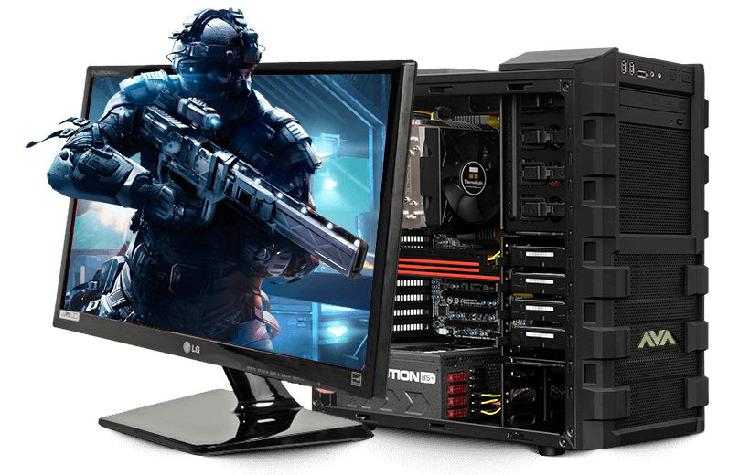

Hardware Solutions

Importancia de las computadoras
Las computadoras se han vuelto una importante herramienta en nuestra vida diaria ya que las utilizamos en los centros educativos, empresas locales, etc.
Leer másNoticias de AMD
Mantente al tanto de las novedades de una de las marcas mundialmente reconocidas en el mundo de la computacion, exacto hablamos de AMD.
Leer másNoticias de Nvidia
Nvidia la marca mundialmente reconocida y más utilizada en el mundo de los ordenadores, síguela para mantenerte al tanto de sus últimos lanzamientos.
Leer más
Recuerda
Los ordenadores o computadores tienen la tarea de facilitarnos las actividades en el dia a dia, cada una de ellas son importantes, como realizar programas, trabajos de oficina, utilizarlo como medio autodidáctico en la educación y para muchas mas cosas. Los computadores poseen componentes externos, estos componentes se pueden cambiar al gusto del usuario para mejorar su rendimiento. Estos computadores poseen potentes procesadores, tarjetas graficas, grandes capacidades de memoria RAM, y lo mas importante una buena tarjeta madre que pueda soportar todos estos componentes, y el gabinete donde se guardan todos los componentes, este está fabricado en fibra de vidrio.Objetivo

Que las personas puedan realizar una buena combinacion a la hora de armar o modificar un ordenador ya que así les funcionará todo correctamente.